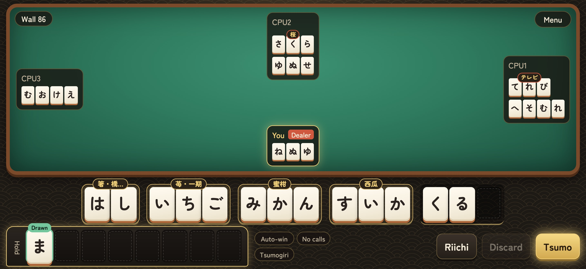
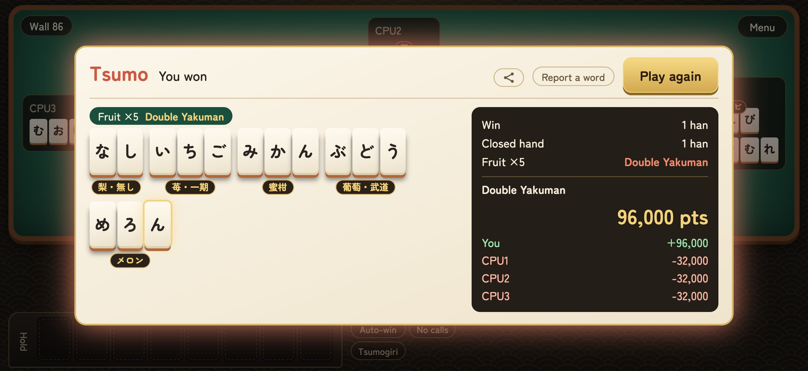
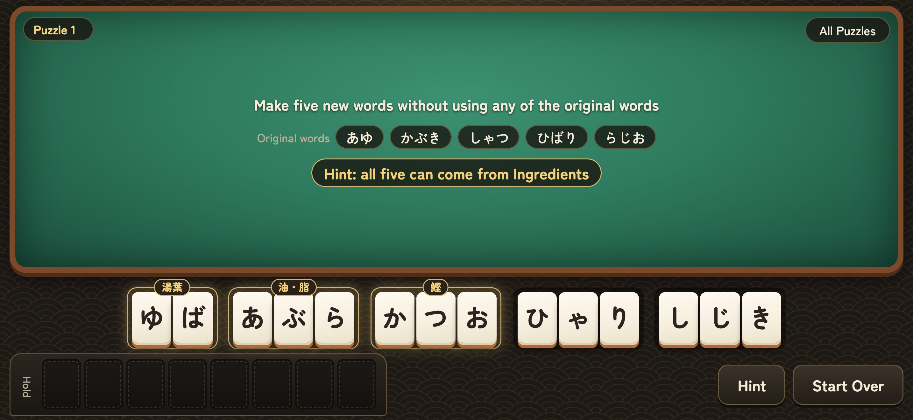

Kotobajan: a mahjong game played with hiragana tiles, now on iPhone and iPad
Rearrange your hand into five words to win. A word game for anyone who can read hiragana, and no mahjong experience is needed
Sukima Apps (Ryohei Sakai), an independent developer in Japan, released Kotobajan: Hiragana Mahjong (ことば雀, "kotobajan") on the App Store on October 27, 2026. It is a mahjong game in which every tile is a hiragana character. It is free to play with a one-time in-app purchase for unlimited play, and has no ads. The app's menus and help are available in English and Japanese, while the tiles and words are always in Japanese. Since launch, the game has gained 100 anagram puzzles and two daily challenges with leaderboards.

What is Kotobajan?
In Japanese mahjong you collect tiles to complete a winning hand. In Kotobajan the tiles are hiragana, and a winning hand is made of words: one 2-letter word and four 3-letter words, 14 tiles in all. You draw a tile, discard one, and keep rearranging your hand into words, playing against three CPU opponents. As in mahjong, you can also win off an opponent's discard (Ron), complete a word with a discarded tile (Chi) and declare Riichi.
The game tells you right away whether a group of tiles forms a word, and shows each word's kanji or katakana spelling (はし → 箸・橋・端), so it also works as a gentle way to get used to Japanese vocabulary. Players who do not know mahjong can simply enjoy making words.
Key features
1. Yaku are words of the same category
In place of mahjong's traditional winning patterns, the score depends on word categories: fruits, vegetables, birds, insects, weather, vehicles, musical instruments and more (38 subcategories). The more words you collect from one category, the higher the score; five from the same category is a Yakuman, the top hand. The app automatically counts each word toward the category that scores highest.

2. About 5,300 words
The word list is built from JMdict, the free Japanese-English dictionary, keeping everyday nouns. Proper nouns such as place and personal names are not used. Players can report missing words from inside the app, and the list keeps growing with those reports. A web dictionary page lets anyone check whether a word is in the game. Note that the app does not show English translations of the words.
3. 100 anagram puzzles
Each puzzle starts from a winning hand of five words. Rearrange the same tiles into five completely different words, using none of the originals. There is no time limit. Every puzzle has an answer in which all five words belong to one category, and a hint reveals the category if you get stuck.

4. Daily challenges: Daily Twenty and Speed Words
Daily Twenty gives every player the same deal each day. Swap two tiles to make a word and those tiles disappear; clear as many tiles as you can in 20 moves. Speed Words gives you 30 seconds to make words from three tiles, again and again. Both have leaderboards for all players.
5. Collecting
Every word you make is added to a Word Book, organized by category. There are more than 80 achievements and 16 table and tile skins to unlock, such as cherry blossom and lacquer tables and gold tiles.
6. English and Japanese screens
Menus, rules and help are available in English and Japanese. The tiles and words are always hiragana, so some ability to read hiragana helps; the in-app "How to Play" screen walks through the rules from the beginning.
Pricing
- Free: 2 full games a day, 3 Speed Words rounds a day, and one Daily Twenty a day. The first 2 puzzles are free, then one new puzzle each day. Hints are free.
- Unlimited Play (one-time in-app purchase): unlimited games, Speed Words and Daily Twenty replays, and all 100 puzzles.
- No ads.
A note from the developer
"I wanted to make a game that a child who has just learned hiragana and an adult who has never played mahjong could enjoy together. All you do is arrange words you already know. I would be glad if people studying Japanese around the world gave it a try." (Ryohei Sakai, Sukima Apps)
Coming next
An Android version is in preparation. Testers are being recruited on the intro page ahead of a Google Play release.
Fact sheet
| Name | Kotobajan: Hiragana Mahjong (ことば雀 - ひらがな麻雀) |
|---|---|
| Genre | Word game / mahjong |
| Platform | iPhone and iPad (iOS 15.0 or later) |
| Price | Free, with a one-time in-app purchase (Unlimited Play) |
| Languages | English and Japanese screens; tiles and words are always Japanese (hiragana) |
| Release date | October 27, 2026 |
| App Store | https://apps.apple.com/us/app/id6826314811 |
| Intro page | https://sakairuh.github.io/kotobajan/ |
| Press kit | https://sakairuh.github.io/kotobajan/press/en/ (images) |
| Developer | Sukima Apps (Ryohei Sakai), independent developer, Japan |
| X | @sukima_apps |
| Word data | Based on JMdict (Electronic Dictionary Research and Development Group, CC BY-SA 4.0) |
Contact
Sukima Apps Ryohei Sakai
Email: sukima.apps.dev@gmail.com
X: @sukima_apps